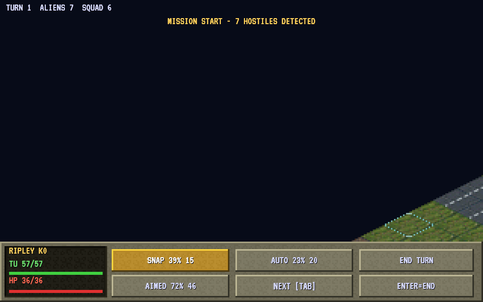

2D games
A 2D game places pictures on a flat screen. Begin with a sprite and a camera, then add movement, collisions and a HUD as you need them.
2D projects ("type": "2d") run on Phaser 4. You describe things with Nord components; the backend creates the Phaser objects.
Project display settings: display.width/height (the logical resolution), scale (fit), pixelArt (nearest-neighbour filtering), background.
Sprites#
Add a sprite with a texture. For sheets, add a sidecar assets/hero.png.meta.json:
{ "type": "spritesheet", "frameWidth": 32, "frameHeight": 32, "filter": "nearest",
"anims": { "idle": { "frames": [0, 3], "fps": 6, "loop": true }, "run": { "frames": [4, 9], "fps": 12, "loop": true } } }Use animatedSprite and getComponent('animatedSprite').play('run'). Flip with setFlip(true); tint with entity.set('animatedSprite', 'tint', '#f66').
Tilemaps#
tilemap loads a Tiled JSON map or a Nord simple map ({ tileWidth, tileHeight, layers: [{ data: [[…]] }], collides: [...] }).
Tiles listed in collides are solid for physics. Tilemaps live in world space and are static — position the entity before the scene starts.
Edit tiles at runtime with setTile(tx, ty, index); the editor has a tilemap painter.
Camera#
The camera component configures the main camera: follow an entity by name/id, lerp smoothing, bounds, deadzone, zoom.
Effects live on game.camera: shake, flash, fade, zoom, center (see game.* namespaces).
Parallax backgrounds#
Several parallax entities with different factors and Z (depth) values give depth. Put far layers at lower z.
Particles#
particles: continuous (frequency, quantity) or one-shot (burst). Trigger bursts from code: getComponent('particles').burst(20).
Library presets: fx-particle-presets.js (explosion, smoke, sparkle…).
Lights#
Adding a light turns on Phaser's light pipeline for sprites, tilemaps and parallax. Use ambient in scene settings for the base darkness. Great for torches (flicker).
Text#
World-space text for signs and damage numbers; for HUD use uiLabel (DOM, always crisp). Fonts: see UI.
Juice checklist#
game.camera.shake()on hits,fx-hitstop.jsfor impact freeze.this.tween(entity.scale, [1.2, 1.2, 1], { duration: 0.1, yoyo: true })for pops.- Particles on pickups, a sound for everything (Audio).
Pixel-art tips#
Set display.pixelArt: true and use a small logical resolution (320×180 or 640×360); scale: "fit" letterboxes it to the window.
Keep sprite sizes multiples of the grid and use filter: "nearest" in meta files.
A real 2D scene#
